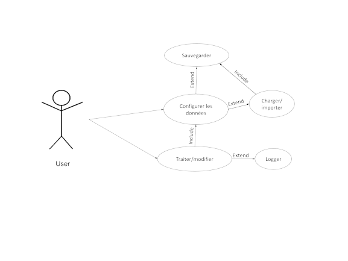

Ce logiciel permet de modifier des données en masse sur plusieurs fichiers depuis un répertoire.
Possibilité de traiter des fichiers d’un répertoire pour forcer les valeurs de différentes données.
Champ pour renseigner un répertoire de dépôt des fichiers après la modification (répertoire créé par l’utilisateur ou par
l’outil s'il n'existe pas).
Possibilité de déterminer le format de fichier dans le répertoires (si possible lecture automatique du format dans le dossier pour préparer l’étape 4).
Création de 3 group boxs dans les formats XML, Positionnel et CSV avec des labels et textboxs spécifiques à chaque format.
Champs générés en fonction du format de fichier à forcer.
Champ pour écrire le texte qui viendra modifier la position précédemment sélectionnée.
Modification de la donnée par l’outil.
Déplacement automatique des fichiers dans le répertoire créé à l’étape 2.
Si impossibilité de forcer la valeur d’une donnée, laisser le fichier dans le répertoire d’origine.
Génération de logs suite à la modification ou l’échec des données.
Expression des besoins de l'outil
Possibilité de fonctionner avec les formats XML, Fichiers plats positionnels (.txt) et CSV.
Possibilité d’importer et/ou d’exporter une configuration.
Possibilité de configurer des données multiples.
Génération de logs pour garder une trace de la modification.
Use case

Explication du Use Case :
Premier cas :
L'utilisateur configure les données à modifier selon le format des fichiers à traiter.
Un enregistrement de la configuration est possible afin qu'elle soit réutilisée.
Si une configuration a été sauvegardée préalablement, l'utilisateur peut l'importer.
Second cas :
L'utilisateur déclenche le traitement des fichiers :
Analyse du répertoire, lecture des fichiers, récupération des données configurées dans le fichier et remplacement de la
valeur à forcer.
Pour chaque valeur remplacée, une log est générée dans un rapport qui peut être sauvegardé à la fin du traitement.